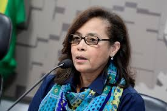

Lula se reúne com n°2 do Itamaraty, Maria Laura da Rocha, para tratar sobre situação na Venezuela
Por Repórter Ricardo Abreu, Guilherme Mazui, TV Globo e g1 — Brasília | 08/09/2024 10h52
O presidente Luiz Inácio Lula da Silva (PT) se reuniu, neste domingo (8), com a secretária-geral do Ministério das Relações Exteriores (Itamaraty), Maria Laura da Rocha, no Palácio da Alvorada. Os dois debateram o episódio mais recente de tensão na Venezuela.
A situação ganhou um novo episódio de tensão neste fim de semana, após o regime de Nicolás Maduro informar ao governo brasileiro que revogou a autorização para que o país represente os interesses da Argentina em Caracas. Maria Laura representa a pasta de forma interina, enquanto o chanceler Mauro Vieira cumpre agendas no Oriente Médio.
A ministra substituta chegou ao Palácio por volta das 8h50, e a reunião durou cerca de duas horas.